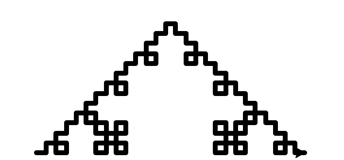

Basic Koch Curve. koch_curve(leonardo, 4, 20)
This is another variation of the Koch Curve, but an extra recursive step is added to make it a Koch Square. Width and Size also decrease as depth increase to ensure that it stays on the screen. koch_curve_modified(leonardo, 2, 20, 10)

def koch_curve_modified(t, depth, size, width):
if (depth == 1):
t.width(width)
t.fd(size)
else:
koch_curve_modified(t, depth-1, size*.8, width*.8)
t.lt(90)
koch_curve_modified(t, depth-1, size*.8, width*.8)
t.rt(90)
koch_curve_modified(t, depth-1, size*.8, width*.8)
t.rt(90)
koch_curve_modified(t, depth-1, size*.8, width*.8)
t.lt(90)
koch_curve_modified(t, depth-1, size*.8, width*.8)
Basic Sierpinski Triangle. sierpinski(michael, 5, 200)

This is another variation of the Sierpinski Triangle, but I have added an extra recursive step to create a 4th triangle in between the 3 triangle for depth greater than 2. In addition, I added a random color generator fucntion that is utilized in the main function to change the color of each triangle randomly. sierpinski_modified(michelangelo, 5, 200)
def random_color():
red = random.randrange(0,256)
green = random.randrange(0,256)
blue = random.randrange(0,256)
color = [red, green, blue]
return tuple(c/255 for c in color)
def sierpinski_modified(t, depth, size):
if depth == 1:
triangle(t, size)
elif depth == 2:
t.color(random_color())
sierpinski_modified(t, depth-1, size/2)
t.fd(size/2)
t.color(random_color())
sierpinski_modified(t, depth-1, size/2)
t.bk(size/2)
t.lt(60)
t.fd(size/2)
t.rt(60)
t.color(random_color())
sierpinski_modified(t, depth-1, size/2)
t.rt(120)
t.fd(size/2)
t.lt(120)
else:
sierpinski_modified(t, depth-1, size/2)
t.fd(size/2)
sierpinski_modified(t, depth-1, size/2)
t.bk(size/2)
t.lt(60)
t.fd(size/2)
t.rt(60)
sierpinski_modified(t, depth-1, size/2)
t.fd(size/2)
t.rt(180)
sierpinski_modified(t, depth-1, size/2)
t.fd(size/2)
t.lt(60)
t.fd(size/2)
t.lt(120)
Basic Tree. tree(rigitoni, 4, 50, 20)
This is a another variation of the tree, except I added it to a second function to make a snowflake shape. I did this by making a second function that allows you to create multiple trees stemming from the same place but turning based on the inputed amount of trees you want. In addition to make it a more realistic snowflake, I made it so the width and size increase as depth increases, making the edges of the snowflake bigger. snow_flake(rig, 4, 20, 20, 8, 3)
def tree_modified(t, depth, size, angle, width):
if depth == 0:
t.fd(size)
t.bk(size)
else:
t.width(width)
t.fd(size)
t.rt(angle)
tree_modified(t, depth-1, size*1.5, angle, width*1.5)
t.lt(2 * angle)
tree_modified(t, depth-1, size*1.5, angle, width*1.5)
t.rt(angle)
t.width(width*.66)
t.bk(size)
t.width(width)
def snow_flake(t, depth, size, angle, petals, width):
for i in range (0, petals):
tree_modified(t, depth, size, angle, width)
t.rt(360/petals)